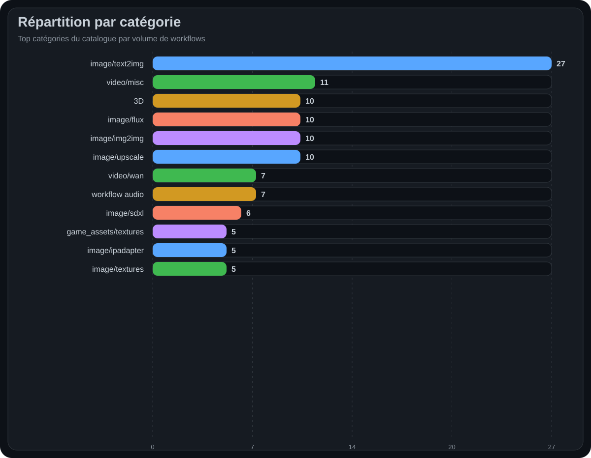
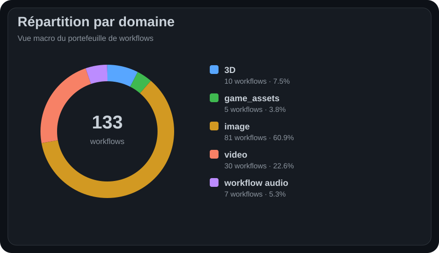
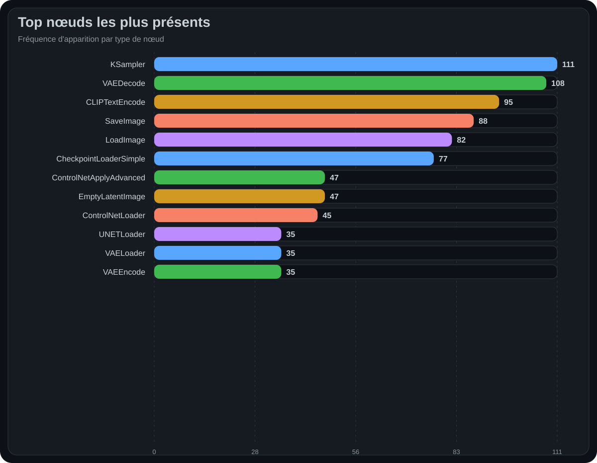
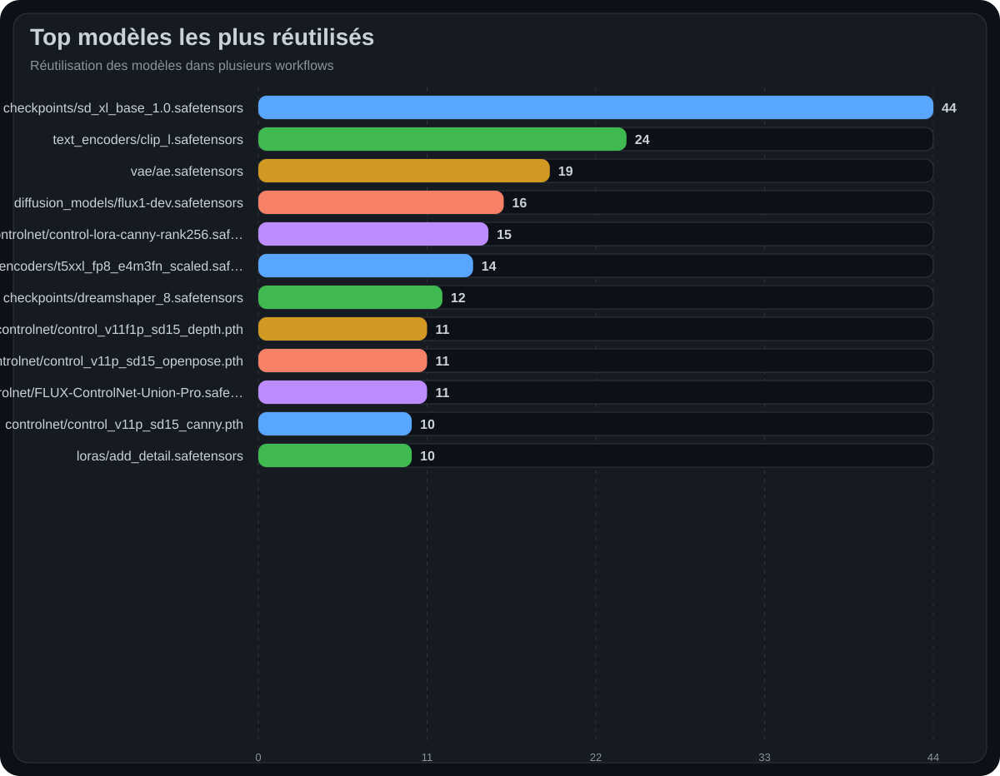

Workflow Catalog · Repo Showcase
Documentation vitrine pour un dépôt GitHub plus lisible, plus démonstratif et moins hostile à l'œil humain.
Overview
Le catalogue contient 133 workflows validés, une base majoritairement UI (129) et un axe principal centré sur image. Le modèle le plus réutilisé est checkpoints/sd_xl_base_1.0.safetensors avec 44 occurrences.
Quick Start
| Step | Action | Purpose |
|---|
| 1 | Lire le README | Comprendre la structure, la couverture et la logique de navigation |
| 2 | Ouvrir 01_SYNTHESIS.md | Voir la lecture benchmark et maintenance |
| 3 | Ouvrir 02_WORKFLOWS.md | Trouver un pipeline cible par catégorie |
| 4 | Descendre vers 03_NODES.md et 04_MODELS.md | Audit technique et dépendances |
Coverage




Maintenance
| Priority | Scope | Why | Action |
|---|
| P1 | Core models | Blast radius élevé | Tester en premier les checkpoints majeurs et encodeurs texte |
| P1 | Central nodes | Risque de propagation transverse | Smoke test sur KSampler, VAEDecode, CLIPTextEncode |
| P2 | Control stacks | Dépendances guidées nombreuses | Revérifier loaders et preprocessors |
| P2 | Video families | Plus sensibles aux versions | Figer les versions et garder des sorties de référence |
| P3 | 3D / audio | Volume plus faible mais plus spécialisé | Maintenir des cas de test dédiés |
Roadmap
| Track | Target | Outcome |
|---|
| R1 | Example Gallery | Transformer le catalogue en vitrine démonstrative |
| R2 | Compatibility Matrix | Documenter versions, packs de nœuds et dépendances critiques |
| R3 | Per-workflow metadata | Ajouter difficulté, VRAM, temps d'exécution et statut de test |
| R4 | Release Notes | Rendre visibles les changements à fort impact |
| R5 | QA Harness | Prévenir les régressions avec des smoke tests par domaine |
Repository Layout
documentation_pack_showcase/
├─ README.md
├─ 00_NAVIGATION.md
├─ 01_SYNTHESIS.md
├─ 02_WORKFLOWS.md
├─ 03_NODES.md
├─ 04_MODELS.md
├─ index.html
└─ assets/
├─ hero.svg
├─ badges/
└─ charts/